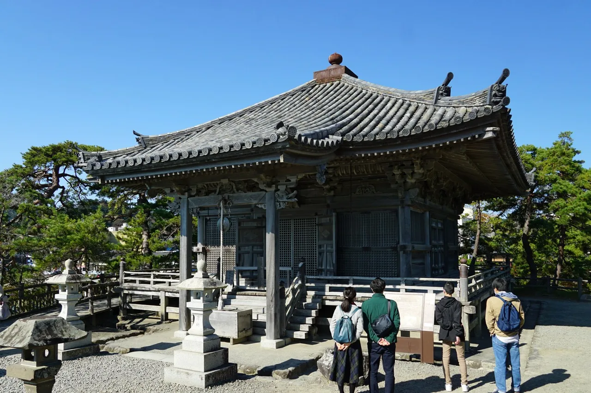

松島観光の徒歩モデルコースは、JR仙石線の松島海岸駅から瑞巌寺、五大堂の順に巡ると組みやすくなります。瑞巌寺は駅から徒歩10分で個人の大人は1,000円、中央桟橋そばの五大堂は駅から徒歩7分で拝観無料です。案内は2026年11月22日時点です。
01仙台から松島観光へ行くときに降りる駅
仙台から電車で向かうなら、行き先には「松島海岸駅」まで入力しましょう。松島観光協会の案内では、仙台駅からJR仙石線で約40分です。東北本線にも「松島駅」があり、同協会によると、そこから観光の中心部までは徒歩20分です。乗換案内の駅名と路線名を予約や待ち合わせの前に見直すと、到着後の歩く距離を見積もりやすくなります。
| 立ち寄り先 | 松島海岸駅からの徒歩時間 | 拝観料 |
|---|---|---|
| 瑞巌寺 | 10分 | 個人は大人1,000円、小・中学生500円 |
| 五大堂 | 7分 | 無料 |
表の時間はいずれも駅から各施設までの目安です。現地を巡る時間を見積もるときは、施設間の移動、拝観、休憩を別々に考えておきましょう。駅まで戻ったらすぐ電車に乗る旅程なら、帰りの発車時刻を出発前に控えると、現地で予定を調整しやすくなります。
02瑞巌寺は拝観所要時間と最終受付から逆算
松島海岸駅に着いたら、まず瑞巌寺へ向かいます。瑞巌寺は伊達家の菩提寺で、本堂は国宝です。堂内を巡るときは、部屋ごとに異なる絵画や彫刻とあわせて、天井の造りにも目を向けると、建物の違いを見比べられます。


寺が案内する拝観の目安は30〜40分です。入れる時刻は閉門の30分前までなので、閉門ぎりぎりに現地へ着く予定は避けましょう。12月と1月は15時30分閉門のため、最終受付は15時です。月によって閉門時刻が異なります。午後に仙台を出る日は、先に寺の公式案内で訪問月の時刻を確かめ、そのあとに乗る電車を決めると予定を組みやすくなります。
03五大堂は中央桟橋のそば、夕方の閉門に注意
瑞巌寺を見終えたら、海沿いの中央桟橋を目印に五大堂へ向かいます。五大堂は国の重要文化財で、現在の建物は伊達政宗が再建したものです。拝観料をかけずに建物と海辺を楽しみたいなら、五大堂を散策の中心にする方法もあります。


五大堂にも夕方の閉門があります。 拝観を優先するなら、休憩や買い物の前に立ち寄っておくと組みやすいです。瑞巌寺と五大堂の両方を見たい場合は、到着が遅くならない便を選んでおきましょう。
注意五大堂へは足元に隙間のある透かし橋を渡ります。松島観光協会は車いすでは渡れないと案内しています。瑞巌寺でも、車いすで拝観できる場所は宝物館です。
04よくある質問
松島観光は松島駅と松島海岸駅のどちらが便利ですか？
瑞巌寺と五大堂を歩いて巡るなら、JR仙石線の松島海岸駅が便利です。瑞巌寺へ徒歩10分、五大堂へ徒歩7分です。
瑞巌寺の観光所要時間はどのくらいですか？
瑞巌寺の拝観の目安は30〜40分です。この時間とは別に、駅から歩く時間やその後の移動時間を見込んでください。
松島の五大堂は無料で観光できますか？
五大堂の拝観は無料です。夕方には閉門するので、拝観を旅程に入れるなら日中に立ち寄りましょう。
05まとめ
仙台からは仙石線で松島海岸駅へ向かい、瑞巌寺の最終受付を基準に一日の順路を組みましょう。見学後は五大堂で海辺を歩き、駅へ戻ります。短い滞在なら、寺の建築と海辺の散策のうち、時間を多く取りたい方を先に決めておくと調整しやすくなります。訪れた町や写真を振り返るなら、旅先を地図に残すTabi Noteの使い方も参考になります。